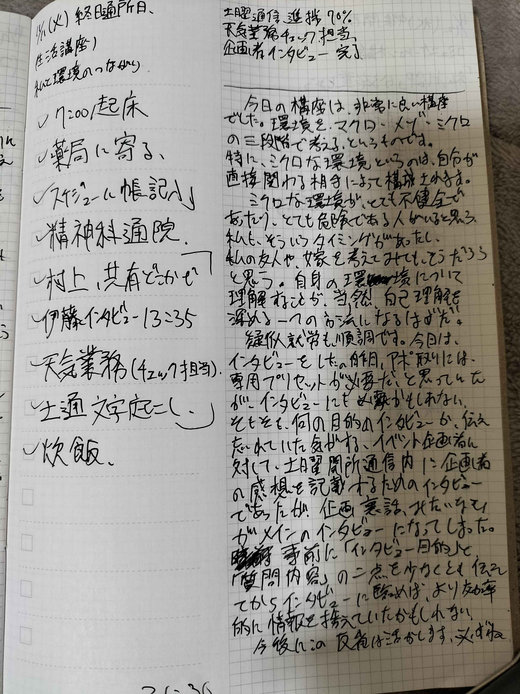

こんばんは。
あなたへの言葉を綴る時の、私の眺める景色が、実は変わってるんですよね。前は、スマホのディスコード画面でしたけど、今は、こんな感じです。（写真）
この景色だと、なんとなく、「こんばんは」と始めたくなるんですよ。昨日は我慢して「どうも」でしたけどね。何を我慢したんですかね。私にもわかりません。
前はどんな書き出しをしてたかな。律儀に日付を書いていた気がする。このサイトに本文を移すときに、日付は省略してしまった気もするけどね。なんせ、このページ作るのに、一ページ当たり五回くらい同じ日付打たないといけないんですよ。今日だったら、「2025-11-11」みたいに。そりゃあ、見飽きますよ。
昨日の手記は少し書きすぎましたね。まあ、そんな日もありますよ。
この手記を読むあなたは多分、このページも、前のページも、次のページも、連続で読み連ねているんだろうと思う。でも私は、２４時間に１ページ更新している。時間の流れがわかるようで、わからないですね。
私はありがたいことに、毎日いろいろなことを学んでいて、いや。それはあなたも、他の人も同じでしょうけどね。ただ、２４時間の変化が１ページに凝縮されて、１か月の変化が３０ページに凝縮されて。一年の変化が３６５ページに収まる。一年もあれば随分人は変わるもんだと思うんですがね。
ちょっとだけ心配ですよ、あなたが情報過多でパンクしないかが。
あるいは、劣等感を感じているんじゃないか、とか。私が精神科退院したときに、こんな素晴らしい数か月にも及ぶ手記を見せられたら、感じざるを得ない気がする。
でもどうだろうね。あなたには家族がいるから、ナイーブになったあなたに優しく話しかけるような文体が、滑稽だったら恥ずかしいもんですね。私は優しいので、その時は笑われてやりますよ。
今日、精神科に行ってきました。私は最近、精神障害についての本を百冊くらい読んで（本当は八冊）嫁が境界性パーソナリティー障害であると確信しました。精神科医にその話をしました。もちろん、相手がその道の専門家であることを忘れてはいませんよ。
精神科医はいかにも「そうだとも、違うとも明言しがたい」という顔をして、とりあえず、境界性パーソナリティー障害についての知恵と、境界性パーソナリティー障害当事者への正しい対応について教えてくれました。（私はこれについても読書によってある程度心得ていましたけどね）
曰（いわ）く、文字通り、（特に親しい人との）心の境界線を見失う障害である。そうで、距離感を以上に縮めたり、急に疎外感を感じたり、といったところですね。対策としては、適切な距離感を考えて守ることだそうです。つまり、（仮に関係性を友達とするなら）私は嫁の家に泊まったり、軽率に押しかけることは控えるべきだし、嫁もこれを誘うのは控えるべきだ。と言った具合でしょうね。
これは単に、関わらない。という話ではない。いつ行くのか、何故行くのか、いつ帰るのか。約束し、守る。友達とはきっとそういうものですからね。
問題があるとすれば、私がこの境界線をめちゃくちゃにしてしまうことですかね。なけなしの１５万使ってタクシーで迎えに行くところから始まって、縁もゆかりもないのに世話をして、常識を教えてモラルを教えて、病気になっても世話をして。どんな関係であったら、説明が付くのか、というくらい私はその境界線を踏み越えているように見える、、と思う。
でも、弁明したい。私は、おそらく境界性パーソナリティー障害ではない。私は、賢く、強すぎるんですよ。少なくとも私の世界では、相手との境界線ははっきりしている。明確になっている。踏み越えることは、絶対にない。本当です。ただ、簡単に動かせるだけです。
多くの人が境界線を簡単に動かさないのは、”動かしてはいけないから”ではないと思います。”簡単に動かすことが難しすぎるから”だと思います。私にはこれができます。赤の他人から嫁に五分で書き換えられる。友達でも、知人でも、忌み嫌う相手にでもできる。別に、部分的に境界線を操ることもできる。時間を割いて数学の授業を撮影してやる友達。入院したときにウェブサイト立ち上げて専用ブログをかいてやる友達。
私は、そうやって踏み込んでも受容されると見込んで踏み込んだ。もし受容されなければ、いつでも引き下がる用意はあるし、これが迷惑ならば詫びる用意もある、攻撃されて傷つく用意もある。なけなしの１５万失う用意も、あった。そこまでリスク管理をしている。そして、私の見込みはたいていの場合、間違っていない。だから私は境界線を書き換える能力者であるだけです。能力者だから一見境界線が存在しないかのように、踏み越えているかのように見えているだけです。
でも、多分嫁からすれば、私に境界線をかき乱されてしまったのかもしれない。もともとそういう素質があったんだろうとは思うけど、私と嫁は、境界線について、致命的に相性が悪いでしょうね。そして、固定された境界線の中では、私と嫁は、そんなに、仲良くならない気がするなあ、わからんけど。なんとなく、嫁と学生時代同じクラスだったとしてもべつに仲良くなるわけない気がするんですよね。これは、嫌いとか、嫌だ。という意味ではないですよ。
それから、私がそう考えているなかで、一つ心配なのは、私とあなたの関係性ですね。私は、全く問題なく、完全に掌握できてるんですけどね。私によって、あなたの境界線への意識が緩んでいたら、心配ですね。いや、、でも。むしろ、最近までのあなたの言動を思い出したら、私の影響で人との境界線をより意識しているように感じることも、あったような気もする。
どうなんですかね。私って、多分。相手の心の隙を見つけて、入り込むことを得意とはしていない。でも、相手の心を揺らして隙間を作る、、か、、違うな。既にある小さな相手の亀裂を、無音で広げる力を持っている気がする。そのスペースに踏み込んでしまうせいで、相手の境界線をあいまいにしてしまうんだとしたら、まさにこれがメンヘラ製造機ってやつなんだろうな。
あれ、、これってじぶんで気づくべきじゃないことだったんじゃない？
相手の隙を広げるのが得意でも、私はそれに気が付かず、入り込むのが得意じゃないから、、って話ですけど、私は非常に賢く優秀なので、やろうと思えばたぶんできるよ。
結婚詐欺師、始めようかなあ。
おやすみ（草）